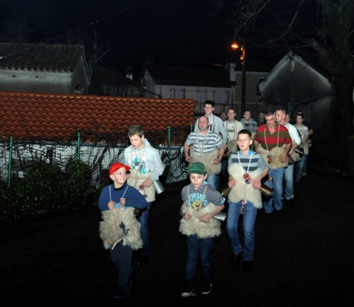
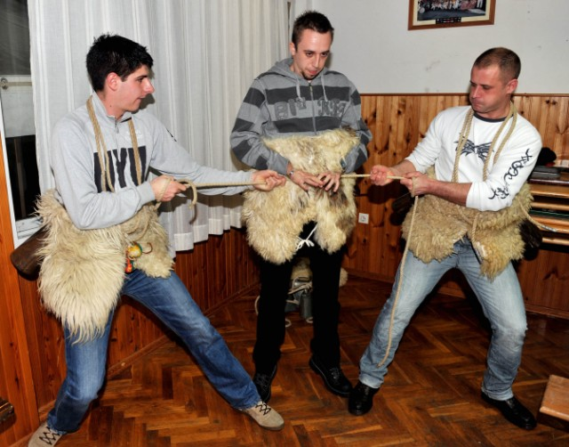
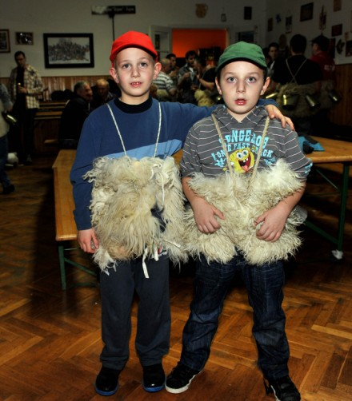
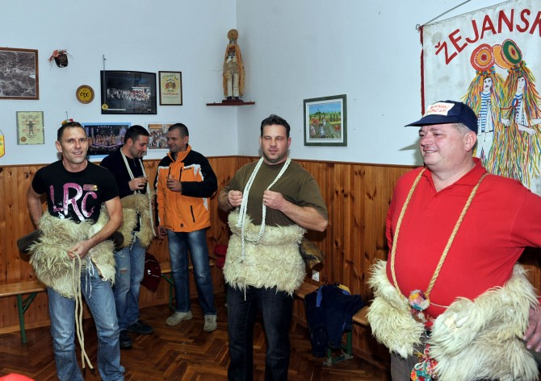

Ponoćna žejanska zvona
Tri kruga po selu za tri kralja - Gašpara, Melkiora i Baltazara
Užanca se zna, tradicija je tradicija, pa tako Žejanci "bez pogovora" u prvim minutama blagdana Sveta tri kralja kreću u prvi zvončarski pohod u (n)ovoj godini, otvarajući i sezonu pusta u matuljskom kraju
Žejane - Mrak, kišica nošena vjetrom i živa na termometru bliža nuli nego sobnoj temperaturi. Ništa od toga nije zaustavilo dvadesetak figura zaogrnutih kožama i krznom i opasanih teškim zvoncima da se iz ugodne topline Doma Žejane upute u tminu noći. Užanca se zna, tradicija je tradicija, pa tako Žejanci bez pogovora u prvim minutama blagdana Sveta tri kralja kreću u prvi zvončarski pohod u (n)ovoj godini, otvarajući i novu sezonu pusta u matuljskom kraju.

Obično u ovaj pohod krene petnaestak do dvadesetak ljudi, no nikad ne znamo koliko će ih biti sve dok ne krenemo. Danas more saki poć zvonit, a od danas do pusne nedjelje se biraju parovi koji će zajedno zvoniti, jer naši zvončari zvone u paru, kazao je Mauro Doričić, predsjednik Žejanskih zvončara, folklornog društva osnovanog 1997. godine s ciljem očuvanja tradicije pusnih običaja.
Domaće kobasice i crno vino
 A običaji nalažu da se s početkom blagdana posvećenog trojici mudraca naprave tri kruga po selu, zvoneći po jednom za Gašpara, Melkiora i Baltazara, i nitko se ne buni previše što mu "ponoćna zvonjava" kvari san, već mještani zvončare uglavnom dočekuju pred svojim domovima, svjetlima lomeći noć i prateći ih pogledom na ovoj "điradi". Nakon završenog obilaska sela, zvončari i svi ljubitelji pusnih običaja okupljaju se ponovo u mjesnome domu, blagujući uz domaće kobasice i crno vino, sve u skladu s izrekom koja tvrdi da "koliko črnega vina popiješ na Tri kralja, toliko ćeš nove krvi dobit", pa se može zaključiti da će nakon prve zvonjave, Žejane biti sasvim dobro "prokrvljene"...
Tradicija se najbolje uči od malih nogu, stoga je među dvadesetak zvončara ravnopravno stupalo i nekolicina onih malenih, koji su jedva krenuli u školu, a već su iskusni u nošenju zvonaca uz bok svojim očevima i susjedima. Najmlađi je među njima bio šest i pol godina star Matej Doričić.
Iza Žejana – Mune
 Zvona sam počeo nositi s pet godina, tata me je naučio kako to treba raditi. Nisam umoran. Nije teško nositi zvonce, a nije mi niti hladno, kazao je Doričić u vrijeme kada većina njegovih vršnjaka spava čvrstim snom.
Nešto stariji od Mateja, i nešto iskusniji je Antonio Kuharić, koji se među zvončarima također našao zahvaljujući obiteljskim vezama.
Imam sedam godina, a prvi put sam zvonce nosio kad sam imao tri godine, i to na Riječkom karnevalu. Zašto sam počeo nositi zvonce? Tata je zvončar, ja sam to vidio, pa sam htio i sam probati. A već sam naviknut na to, i nije mi hladno niti sam umoran, kazao je Antonio o svojim iskustvima na žejanskim noćnim pohodima.
 Nakon Žejana, čiji su mještani objesili i pusta, u vrijeme "pusneh nemotarij" s prvim minutama današnjega dana ušle su i Mune, dok će većina matuljskoga kraja, ali i cijele Liburnije u "peto godišnje doba" zakoračiti 17. siječnja, kada se oglasi Antonjski rog.
Davor Žic
January 7, 2014
© 2014 Novi List